Risk graphs — Monday, November 16, 2026
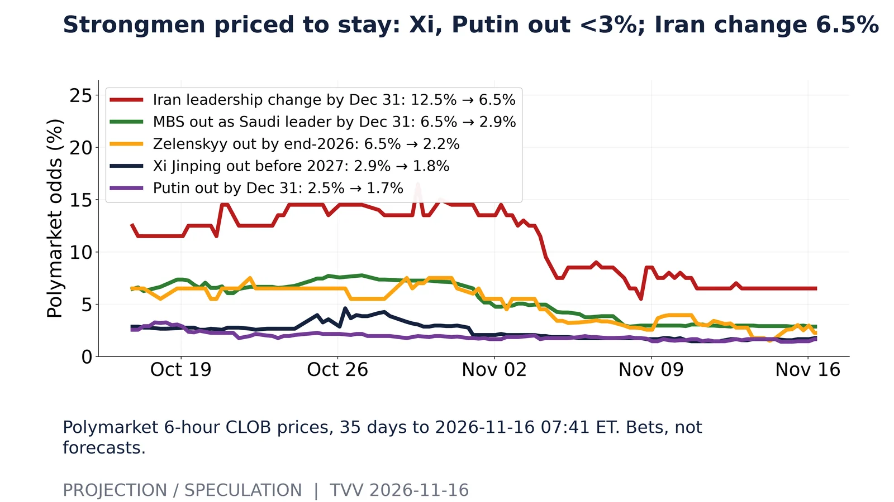
Strongmen priced to stay: Xi, Putin out <3%; Iran change 6.5%. Polymarket 6-hour CLOB prices, 35 days to 2026-11-16 07:41 ET. Bets, not forecasts.Source: https://polymarket.com/event/iran-leadership-change-by 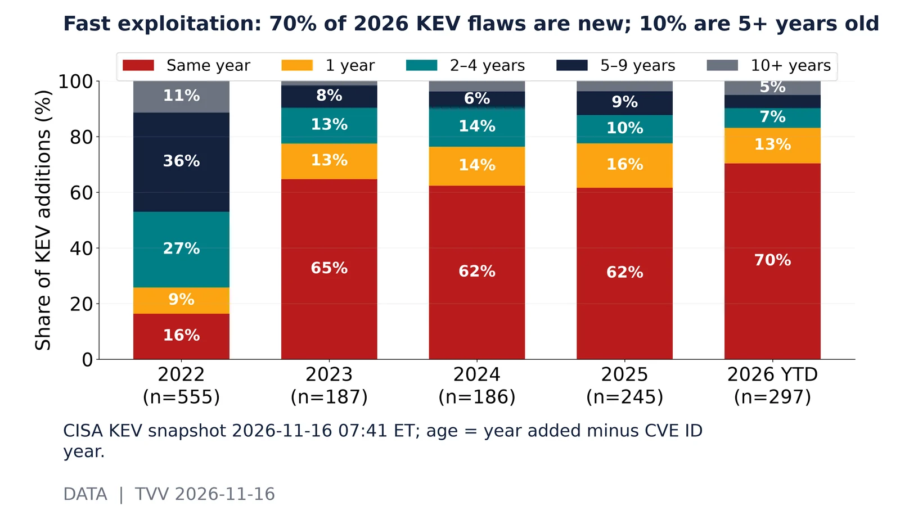
Fast exploitation: 70% of 2026 KEV flaws are new; 10% are 5+ years old. CISA KEV snapshot 2026-11-16 07:41 ET; age = year added minus CVE ID year.Source: https://www.cisa.gov/known-exploited-vulnerabilities-catalog 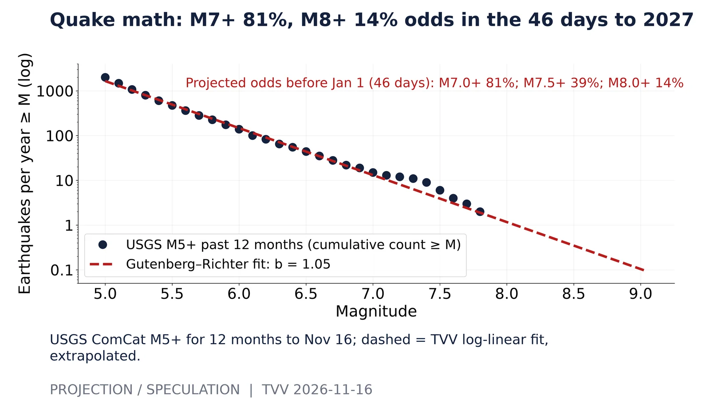
Quake math: M7+ 81%, M8+ 14% odds in the 46 days to 2027. USGS ComCat M5+ for 12 months to Nov 16; dashed = TVV log-linear fit, extrapolated.Source: https://earthquake.usgs.gov/fdsnws/event/1/query?format=csv&starttime=2025-11-15&endtime=2026-11-16T12:00:00&minmagnitude=5 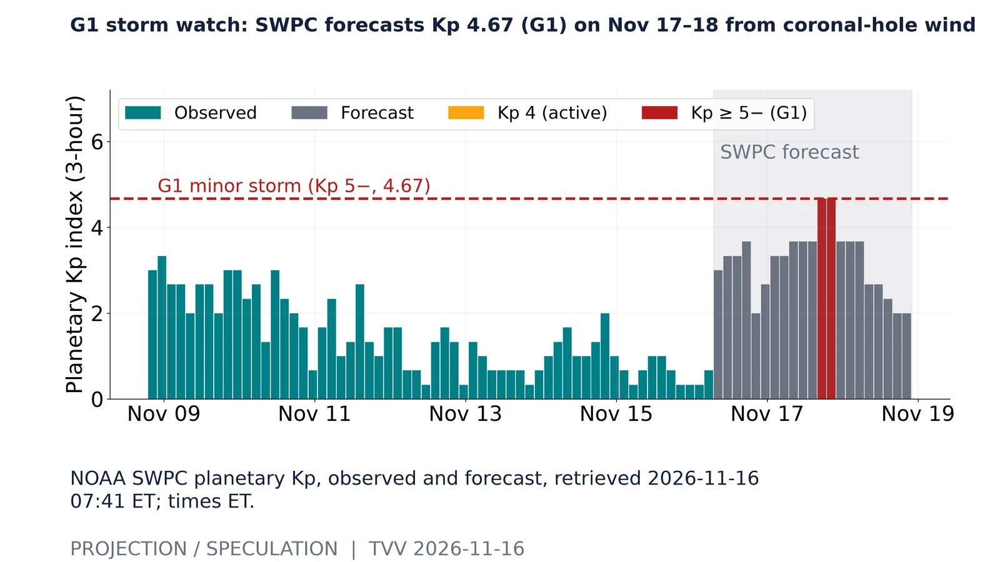
G1 storm watch: SWPC forecasts Kp 4.67 (G1) on Nov 17–18 from coronal-hole wind. NOAA SWPC planetary Kp, observed and forecast, retrieved 2026-11-16 07:41 ET; times ET.Source: https://services.swpc.noaa.gov/products/noaa-planetary-k-index-forecast.json 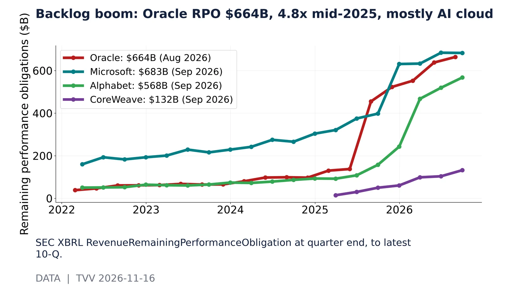
Backlog boom: Oracle RPO $664B, 4.8x mid-2025, mostly AI cloud. SEC XBRL RevenueRemainingPerformanceObligation at quarter end, to latest 10-Q.Source: https://data.sec.gov/api/xbrl/companyfacts/CIK0001341439.json 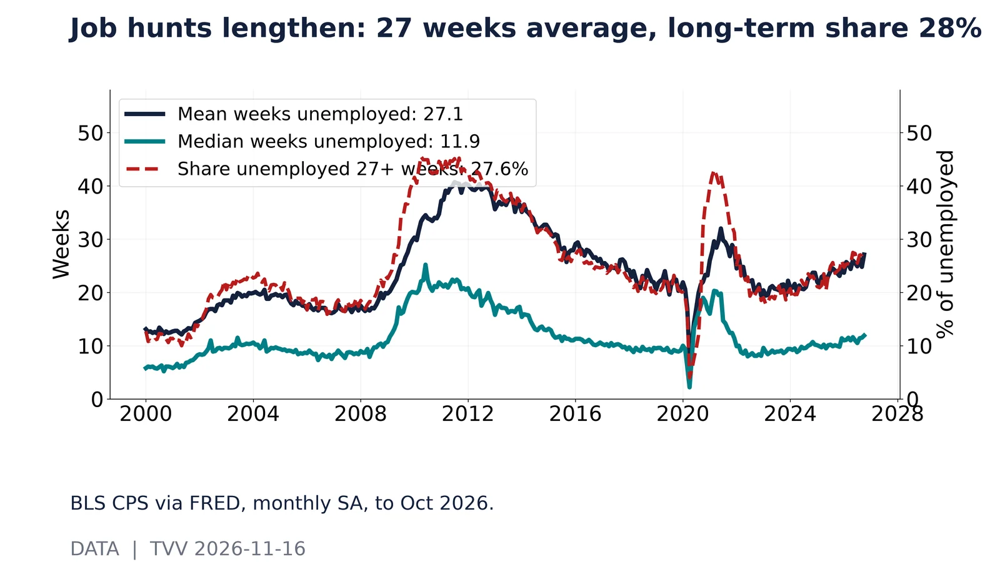
Job hunts lengthen: 27 weeks average, long-term share 28%. BLS CPS via FRED, monthly SA, to Oct 2026.Source: https://fred.stlouisfed.org/graph/fredgraph.csv?id=UEMPMEAN 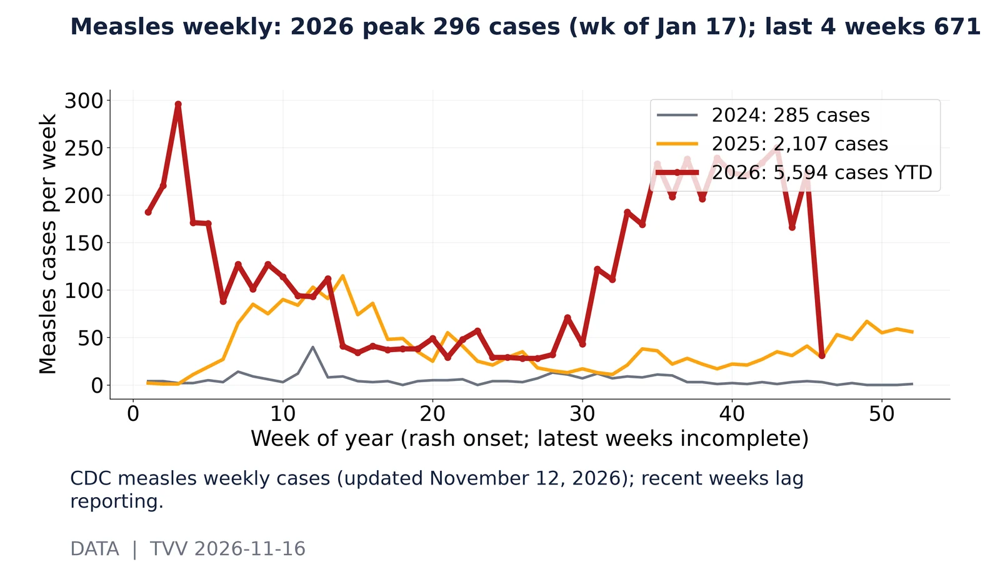
Measles weekly: 2026 peak 296 cases (wk of Jan 17); last 4 weeks 671. CDC measles weekly cases (updated November 12, 2026); recent weeks lag reporting.Source: https://www.cdc.gov/measles/data-research/index.html 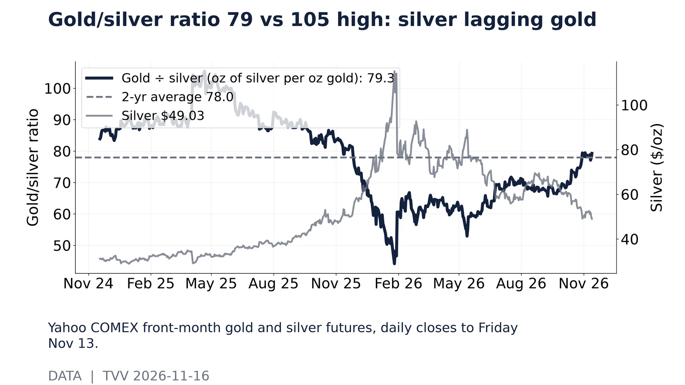
Gold/silver ratio 79 vs 105 high: silver lagging gold. Yahoo COMEX front-month gold and silver futures, daily closes to Friday Nov 13.Source: https://query1.finance.yahoo.com/v8/finance/chart/GC=F?range=2y&interval=1d 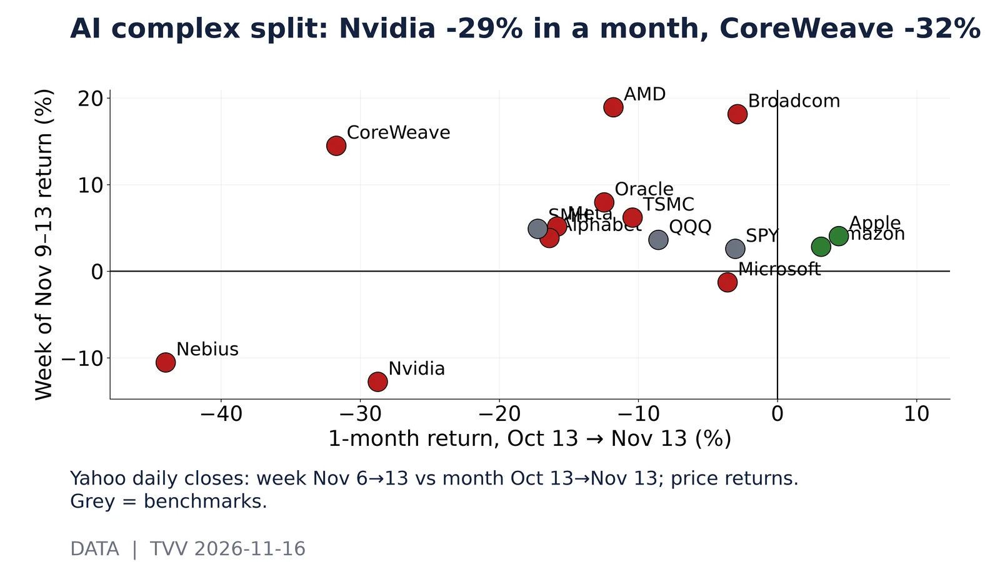
AI complex split: Nvidia -29% in a month, CoreWeave -32%. Yahoo daily closes: week Nov 6→13 vs month Oct 13→Nov 13; price returns. Grey = benchmarks.Source: https://query1.finance.yahoo.com/v8/finance/chart/NVDA?range=2y&interval=1d 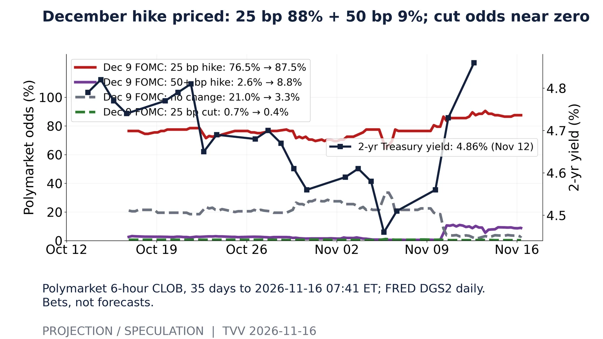
December hike priced: 25 bp 88% + 50 bp 9%; cut odds near zero. Polymarket 6-hour CLOB, 35 days to 2026-11-16 07:41 ET; FRED DGS2 daily. Bets, not forecasts.Source: https://polymarket.com/event/fed-decision-in-december-20260729232808632 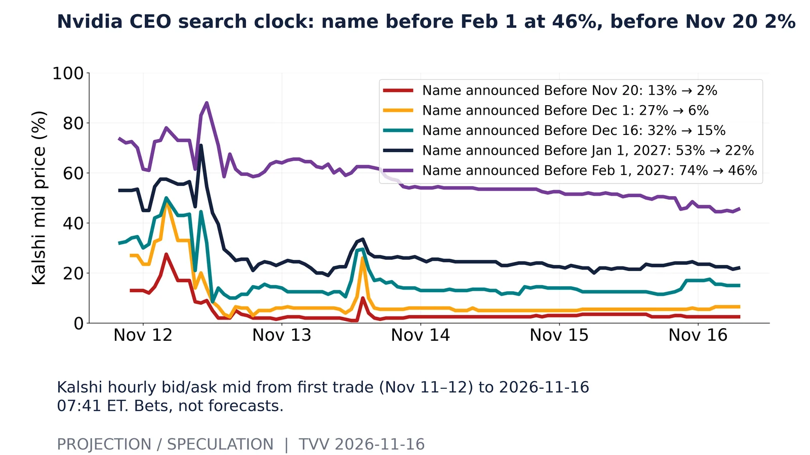
Nvidia CEO search clock: name before Feb 1 at 46%, before Nov 20 2%. Kalshi hourly bid/ask mid from first trade (Nov 11–12) to 2026-11-16 07:41 ET. Bets, not forecasts.Source: https://kalshi.com/markets/kxnvdaceodate 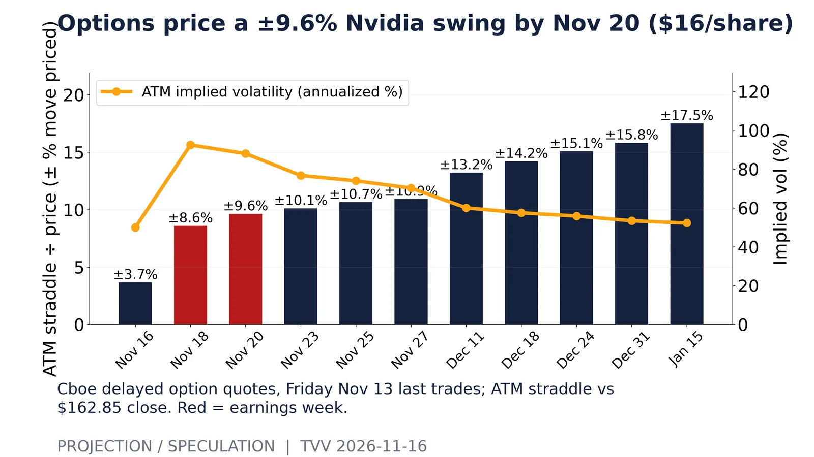
Options price a ±9.6% Nvidia swing by Nov 20 ($16/share). Cboe delayed option quotes, Friday Nov 13 last trades; ATM straddle vs $162.85 close. Red = earnings week.Source: https://www.cboe.com/delayed_quotes/nvda/quote_table 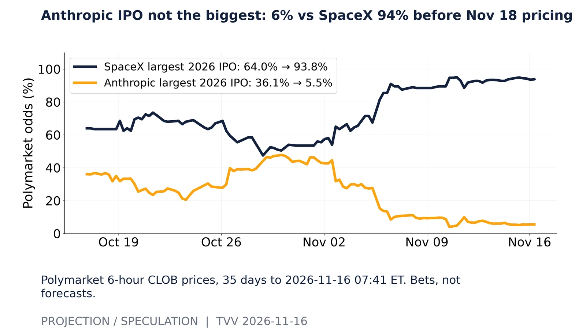
Anthropic IPO not the biggest: 6% vs SpaceX 94% before Nov 18 pricing. Polymarket 6-hour CLOB prices, 35 days to 2026-11-16 07:41 ET. Bets, not forecasts.Source: https://polymarket.com/event/largest-ipo-by-market-cap-in-2026-287 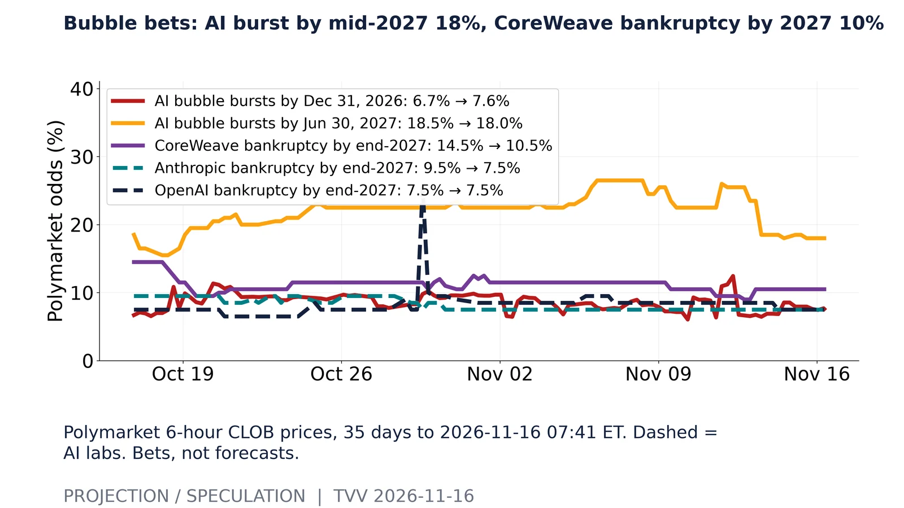
Bubble bets: AI burst by mid-2027 18%, CoreWeave bankruptcy by 2027 10%. Polymarket 6-hour CLOB prices, 35 days to 2026-11-16 07:41 ET. Dashed = AI labs. Bets, not forecasts.Source: https://polymarket.com/event/ai-bubble-burst-by 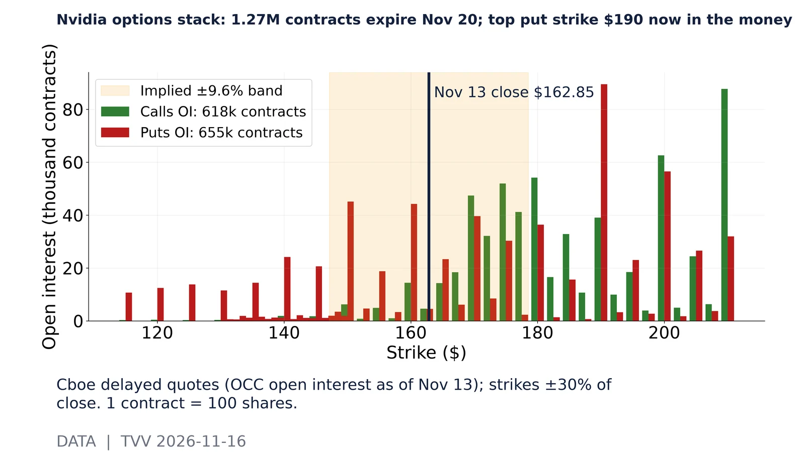
Nvidia options stack: 1.27M contracts expire Nov 20; top put strike $190 now in the money. Cboe delayed quotes (OCC open interest as of Nov 13); strikes ±30% of close. 1 contract = 100 shares.Source: https://www.cboe.com/delayed_quotes/nvda/quote_table 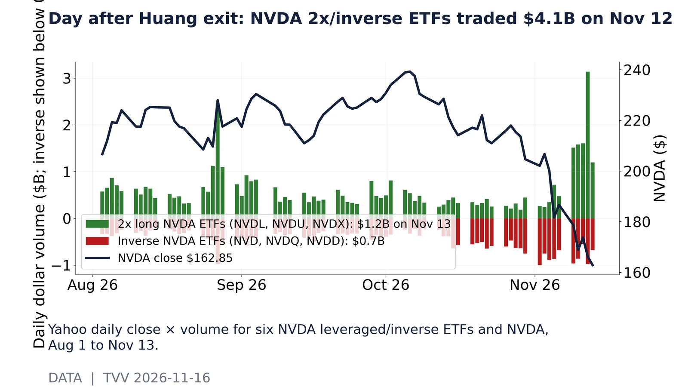
Day after Huang exit: NVDA 2x/inverse ETFs traded $4.1B on Nov 12. Yahoo daily close × volume for six NVDA leveraged/inverse ETFs and NVDA, Aug 1 to Nov 13.Source: https://query1.finance.yahoo.com/v8/finance/chart/NVDL?range=2y&interval=1d 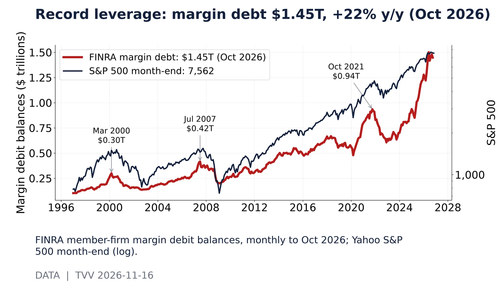
Record leverage: margin debt $1.45T, +22% y/y (Oct 2026). FINRA member-firm margin debit balances, monthly to Oct 2026; Yahoo S&P 500 month-end (log).Source: https://www.finra.org/rules-guidance/key-topics/margin-accounts/margin-statistics